Overview
HobbyLoop is a mobile app designed to foster community for your favorite hobbies and provides resources to transition into new hobbies. It notifies you of events happening in your area and shows you what activities your friends are interested in.
Problem
It's difficult to stay up-to-date with activities people host for various hobbies. Many of them require you to follow multiple accounts on Instagram or know people within the industry to stay in the loop. For examples, K-Pop dance classes are not well-advertised and rely on people knowing dancers in the industry to know what’s happening.
Ideation
When developing the concept for this app, I started with a specific target audience of people who want to learn K-Pop dances. I started by creating a visual model of the potential stakeholders.


Formation
In order to be more inclusive of my class, I decided to broaden my target audience to anyone who wants to get the inside scoop about activities for any hobby.
I chose the name and tagline "HobbyLoop: Be in the loop for your favorite hobbies." I chose to use the Bellota font for the curviness to represent being "in the loop", but I decided to replace the H and L with cursive I created using the pen tool so that it flows nicely.
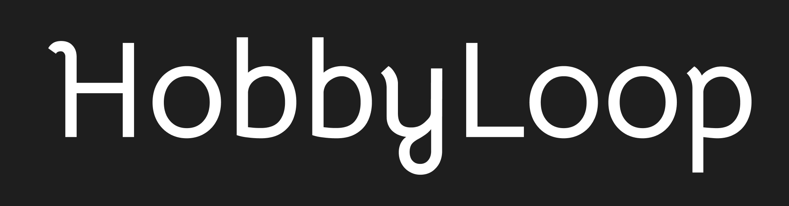
Pitch
The next step was to pitch the idea to the class in hopes of being in the top 5 out of 20 pitches to be selected. My pitch deck consists of the Visual Value Proposition for HobbyLoop as well as an Elevator Pitch and Competitive Analysis. Spoiler alert: My project idea was selected! 🤩

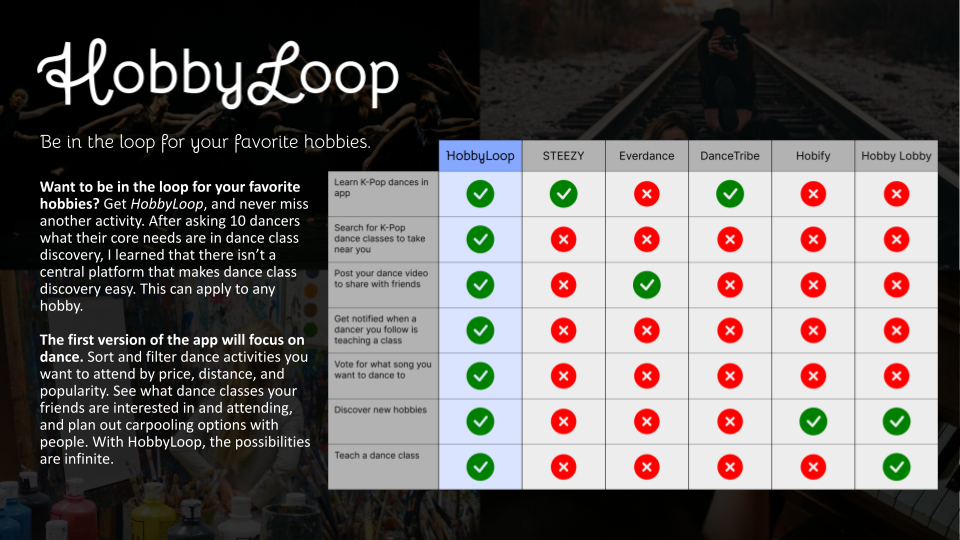
Epics, Features, and User Stories
After completing a Team Alignment Canvas assignment and getting to know my team, we jumped straight into listing out potential features and user stories and categorizing them into epics. Then, we ranked them from least to most important in terms of priority.
Personas
Then, we created personas to empathize with potential end users. We designed three different personas:
- Felix Brown, the beginner dancer
- Danielle March, the experienced dancer
- Ocean Lee, the dance teacher

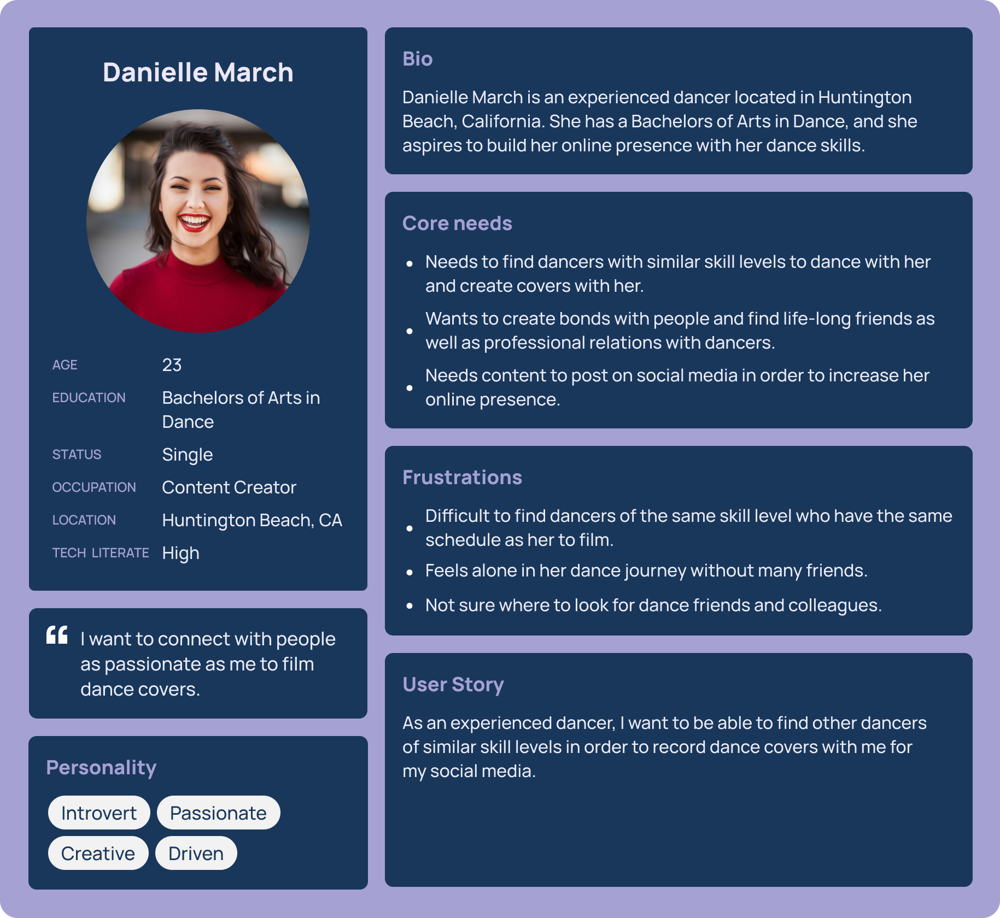
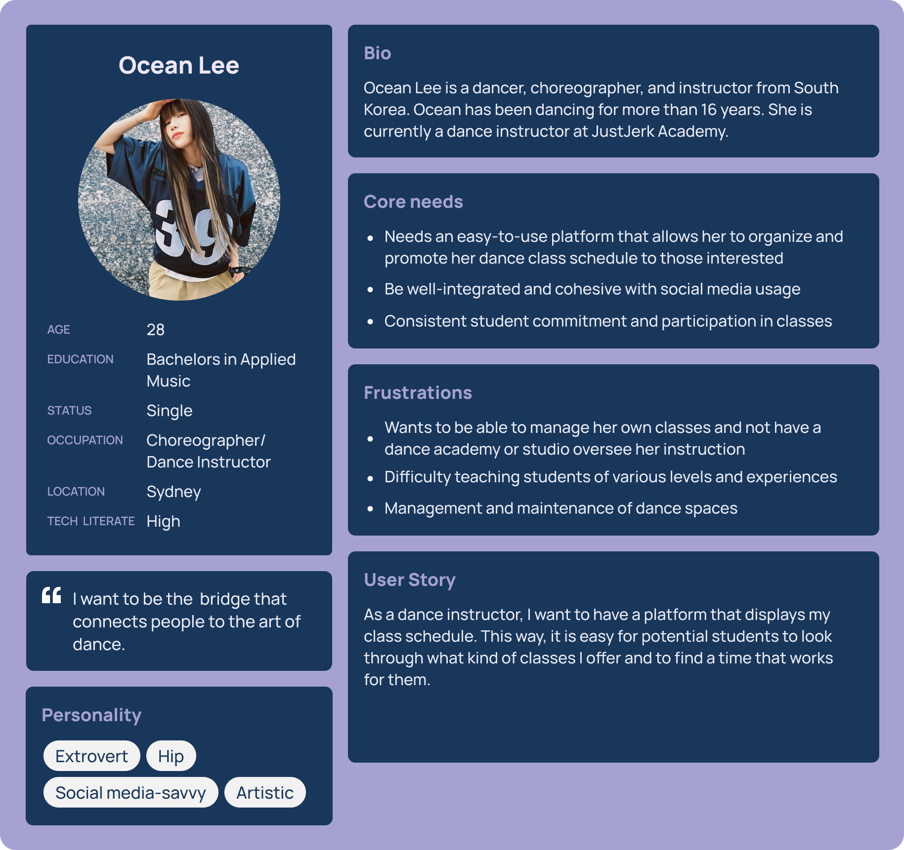
Scenarios
From there, we chose two of them to create scenarios for. We chose Felix and Ocean to include both a student and a teacher.

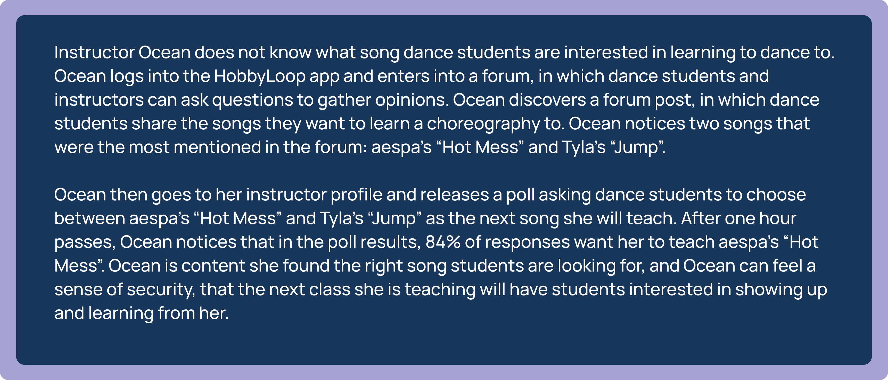
Storyboard
Finally, we created a storyboard for Felix using the user journey of how to use the HobbyLoop app to find a dance class best suited for Felix. The images were created using Midjourney and the Adobe Suite.
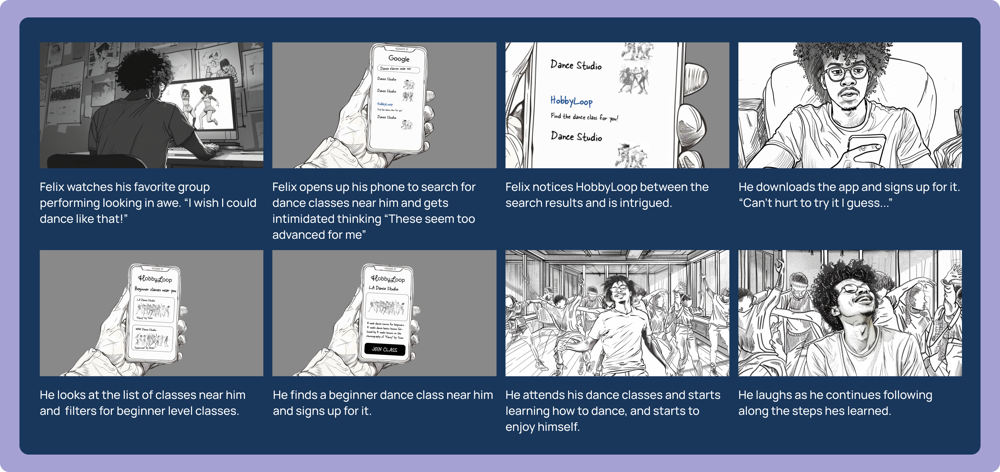
Low-Fidelity Wireframes
In order to test the user flow, we created low-fidelity wireframes to collect user reactions and responses to better our app for the final prototype.
These images represent the user journey of a beginner dancer.
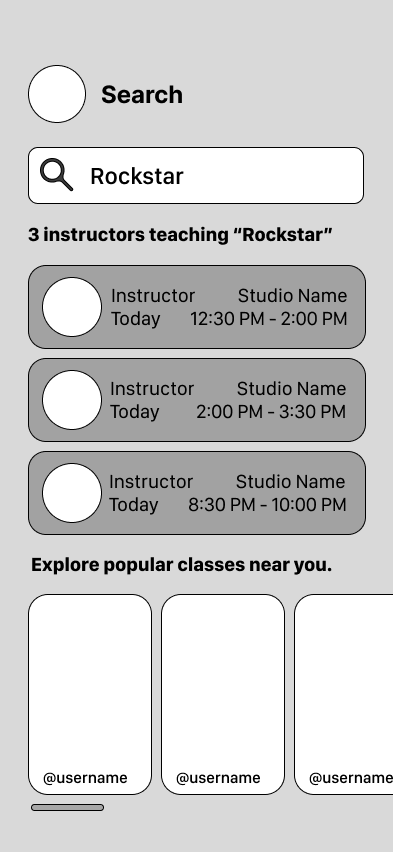

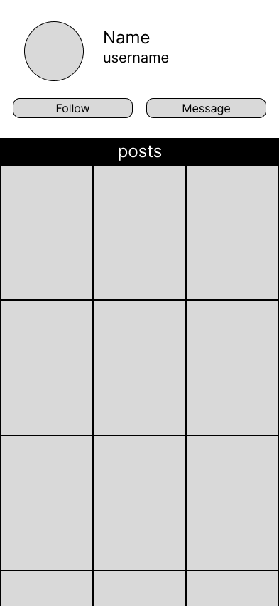

This flow represents the user journey of a dance teacher.

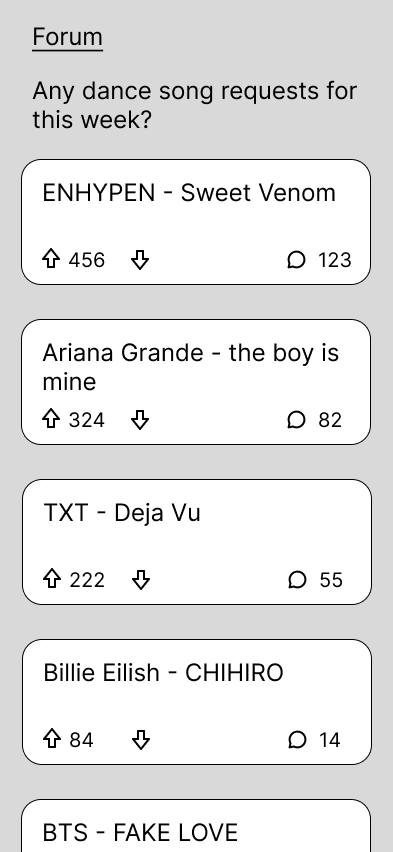

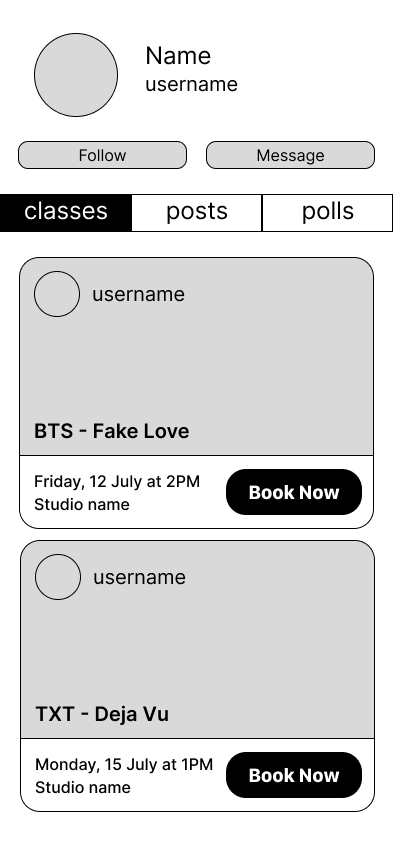
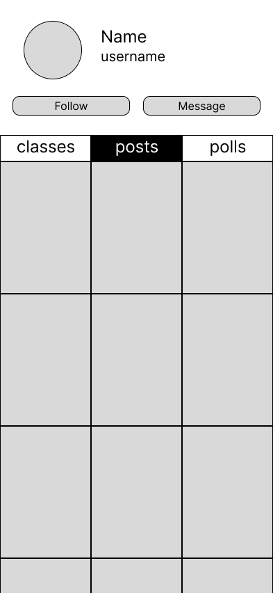
Research
Using Qualtrics, we created a survey asking questions about our visual value proposition, low-fidelity wireframes of key user stories, and additional information. We were able to get 40 survey respondents ranging from people who have multiple hobbies, people who dance for fun, and people who dance for a living. Then, we analyzed our results and created an executive summary where we described recurring user issues and provided team recommendations.